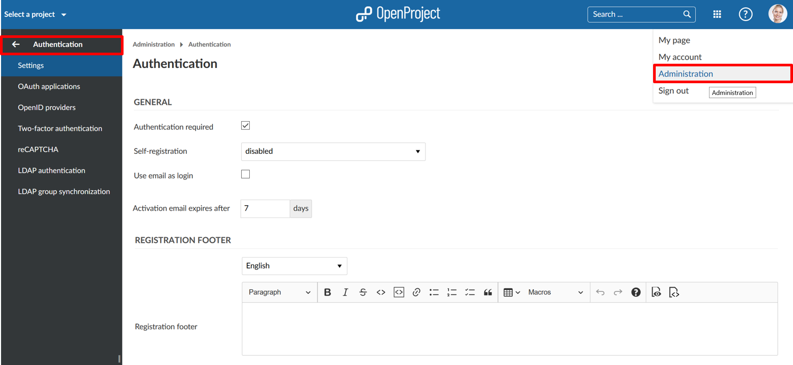

Configure authentication settings and authentication providers in OpenProject. To adapt these authentication settings, navigate to your user name and select -> Administration -> Authentication.

| Popular Topics | Description |
|---|---|
| Authentication settings | Configure general authentication settings, such as registration, passwords, and more. |
| OAuth applications | How to configure OAuth applications in OpenProject? |
| OpenID providers | How to configure OpenID providers in OpenProject? |
| Two-factor authentication | Set up and manage two-factor authentication (2FA) in OpenProject. |
| reCAPTCHA | How to activate reCAPTCHA in OpenProject? |
| LDAP authentication | How to set up LDAP authentication in OpenProject? |
| LDAP group synchronization | How to configure LDAP group synchronization in OpenProject (Premium feature)? |
We do support the main authentication provider, such as CAS, SAML, OpenID Connect, Kerberos, and Okta. Please note that single sign-on is a premium feature and can only be activated for the Cloud Edition and the Enterprise Edition.